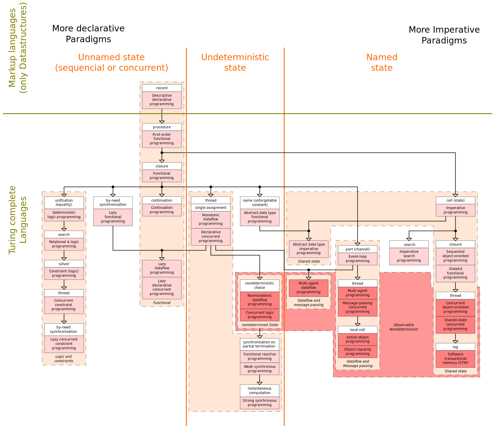
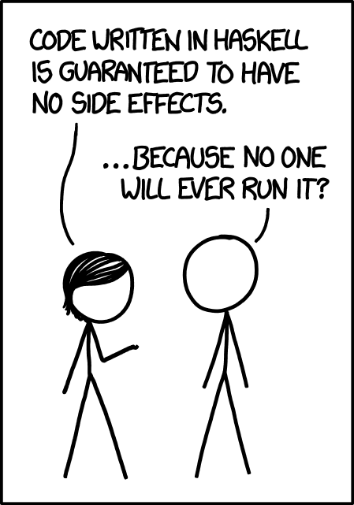

데이터를 요리조리 만지다보면, 혹은 R을 조금 더 본격 프로그래밍적으로 접근하고 싶어서 이것저것 찾다보면 purrr 패키지를 만나게 됩니다. 마침 작년 12월 20일에 purrr 패키지 1.0.0 버전이 출시되었으니 새해를 여는 R쓸 이야기의 주인공으로 purrr 패키지를 골라봤습니다.
purrr’s name
“It’s designed to make your pure functions purrr”
purrr 패키지가 세상에 처음으로 선을 보인건 2015년 9월입니다. 9월 29일 rstudio blog에 purrr 0.1.0을 올리며 쓴 포스트를 보면 왜 purrr 패키지를 만들었는지 알 수 있죠. “이 패키지는 당신의 순수한 함수를 그르릉되게 만들도록 설계되었습니다.” 이 문장의 표현대로 purrr 패키지는 R의 함수형 프로그래밍(FP)의 빈틈을 채워주는 패키지입니다.
그런데 이름은 왜 purrr로 정해졌을까요? purr라는 단어의 원래 뜻은 “그르렁대다”입니다. 그 영향으로 로고에는 귀여운 고양이가 담겨있죠. tidyverse 깃허브를 구경하다 보면, 당시 개발자들이 훗날 purrr가 될 새로운 패키지에 어떤 이름을 붙일지 고민한 흔적을 확인할 수 있습니다. 그 흔적을 살펴보면 purrr라는 작명의 이유를 찾을 수 있죠.
당시 함수형 프로그래밍 패키지 이름의 첫 번째 후보는 purr였습니다. 순수한 함수(pure function)와 어울리게 pure로도 읽을 수 있고, 함수(function → purpose → purr)라는 단어의 흔적도 담을 수 있으니 괜찮아 보입니다. 또 다른 후보는 funr이었어요. fun한 패키지면서도 function, 즉 함수형 프로그래밍의 의미를 담으려 했죠. funr 외에도 funcr, funkr, funker 등이 function의 흔적이 담긴 이름 후보들이었습니다. 최종적으로는 purr에 R이 더해져 purrr이 되었죠.
Functional Programming
그런데 여기서 이야기하는 함수형 프로그래밍(FP, Functional Programming)은 뭘까요? 프로그래밍은 크게 명령형 프로그래밍(Imperative Programming)과 선언형 프로그래밍(Declarative Programming)으로 구분할 수 있습니다. 물론 엄밀하게 구분하면 아래와 같은 지도같이 더 복잡하게 구분할 수도 있는데, 우리는 purrr 패키지를 이해하는 게 우선이니 명령형과 선언형으로만 구분해 보겠습니다.

Overview of the various programming paradigms according to Peter Van Roy
명령형 프로그래밍은 프로그래밍의 상태와 상태를 변형시키는 구문의 관점에서 연산을 설명합니다. 우리가 일반적으로 누군가에게 명령(혹은 부탁)을 할 때 어떤 동작을 할 것인지를 표현하는 것처럼, 명령형 프로그래밍은 컴퓨터에게도 컴퓨터가 수행할 명령을 순서대로 말하는 방식을 의미합니다. 즉 명령형 프로그래밍은 컴퓨터에게 무엇(What)을 할 것인지에 방점을 찍어 설명하는 게 아니라 어떻게(How)할 것인지에 중심을 두고 설명합니다.
반면 선언형 프로그래밍은 어떻게(How)가 메인이 아니라 무엇(What)이 메인인 프로그래밍 방법입니다. 웹 페이지나 블로그의 코드를 생각해 보죠. 우리는 블로그의 코드를 작성할 때 제목과 본문, 그림, 폰트와 같이 무엇(What)이 화면에 나타나야 하는지를 코드로 표현합니다. 이런 접근방식을 선언형 프로그래밍이라고 합니다.
함수형 프로그래밍은 선언형 프로그래밍에 속합니다. 이름에서 알 수 있듯이 함수를 조합해서 소프트웨어를 만드는 방식을 의미하죠. 함수형 프로그래밍은 거의 모든 것을 함수로 접근합니다. 아무리 작은 것도 함수로 표현하려고 합니다. 이렇게 하면 코드 가독성이 높아지고, 코드의 유지보수가 용이해진다는 장점이 있어요. 참고로 함수형 프로그래밍은 람다 대수라는 대수 체계를 기반으로 발전했는데, 그래서 lambda라는 이름이 purrr 패키지의 또다른 후보이기도 했죠.
All about purrr
map
purrr 패키지의 알파이자 오메가인 map( ) 함수를 살펴보겠습니다. 아까 위에서 함수형 프로그래밍은 거의 모든 것을 함수로 생각한다고 했죠? 함수형 프로그래밍에서는 함수조차도 값으로 취급합니다. 그래서 함수를 다루는 함수도 존재하죠.
예를 들어 1부터 10까지의 숫자를 제곱한다고 해봅시다. 명령형 프로그래밍에선 반복문을 이용해 숫자들을 제곱해 나갈겁니다. 반면 함수형 프로그래밍에선 인수를 제곱하는 함수를 또 다른 함수의 인수로 전달하는 함수의 함수, 이름하여 고차 함수(고계 함수)를 이용해 접근합니다.
대표적인 게 바로 하스켈의 map함수입니다. 하스켈의 map함수는 purrr에서도 동일하게 등장합니다. map함수의 map은 수학에서 의미하는 매핑(mapping, 사상), 즉 일반적인 의미의 함수를 뜻합니다. 참고로 하스켈은 순수 함수형 프로그래밍 언어인데요, 하스켈 코드는 부작용(side effect)이 없다(!)는 장점을 가지고 있기도 하죠.

xkce_Haskell
r에서 명령형 프로그래밍 방법과 함수형 프로그래밍 방법에 따라 1부터 10까지의 숫자들을 제곱해 보겠습니다. 먼저 나만의 소중한 제곱 함수를 만들어놓고 시작해 보죠. for loop에서는 1부터 10까지 각각의 i에 my_square( ) 함수를 적용했습니다. 함수형 프로그래밍에선 고차함수 map( )에 my_square( )라는 함수를 값으로 취급해 넣었습니다. 당연히 두 결과는 같습니다.
전통적인 명령형 함수에서는 모든 함수에 이름이 부여되어야 했지만 함수형 언어에서는 익명으로 처리할 수도 있습니다. 기존 R에서는 function(x) {...} 구문으로 표시해왔지만 R 4.1.0에서는 하스켈 문법과 동일하게 \(역빗금)으로 익명 함수 구문을 표현할 수 있게 되었습니다. 여기서 \(역빗금)은 람다를 의미하죠.
dog, cats, rats 이렇게 세 단어 중 “at”가 포함된 단어를 골라내는 함수를 적용해보겠습니다. 기존 R 문법 스타일로는 “at”를 찾으라는 함수를 function(x) grepl("at", x) 이렇게 표시했지만 R 4.1.0부터는 \(x) grepl("at", x)라고만 해도 됩니다.
# 기존 R 문법에서 익명 함수 처리c("dogs", "cats", "rats") |> {function(x) grepl("at", x)}()
[1] FALSE TRUE TRUE
# R 4.1.0에서 익명 함수 처리c("dogs", "cats", "rats") |> {\(x) grepl("at", x)}()
purrr 패키지에는 map( ) 함수만 해도 map_dbl( ), map_lgl( ), map_int( ), map_int( ) 등 딸린 식구들이 많습니다. 거기에 map2, pmap, imap, keep, compact, pluck, modify 등 다양한 함수들이 넘쳐나죠. R쓸 패키지 이야기는 이 정도로 마무리하고 purrr에 딸려있는 나머지 다양한 함수들은 daily 코너를 통해 조금씩 풀어나가 보도록 하겠습니다.